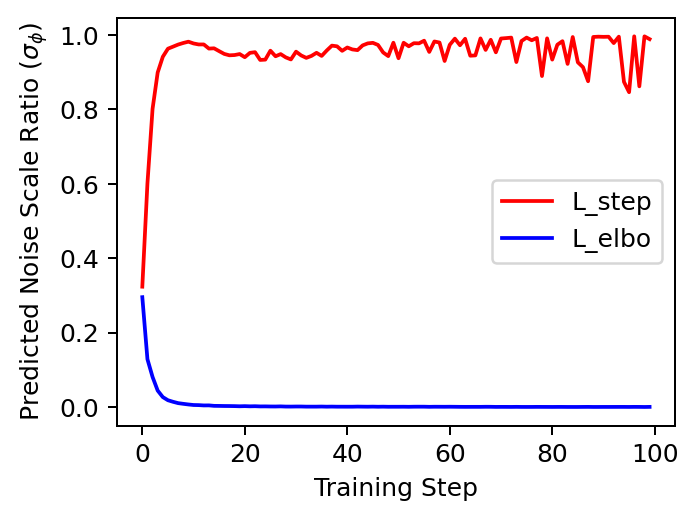
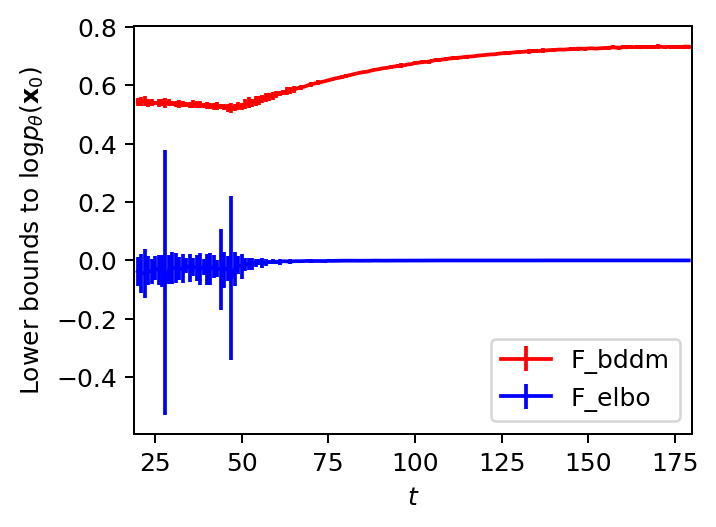
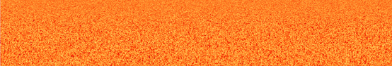
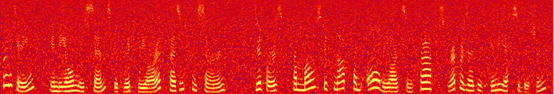
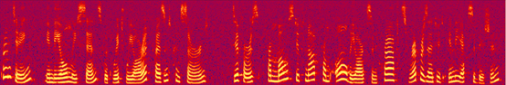
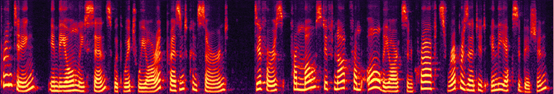
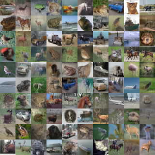
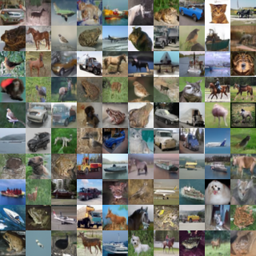
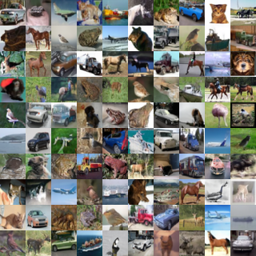

Abstract: Denoising diffusion models were designed with a simple forward process yet brought challenges for efficient sampling. Instead of striving for an accelerated sampler, we propose new bilateral denoising diffusion models (BDDMs) that parameterize the forward and reverse processes, with a score network and a scheduling network, respectively. From a bilateral modeling objective, we derive a tighter lower bound as a surrogate objective for the likelihood to achieve exceedingly high-quality and fast generation compared to other cutting-edge samplers. In particular, with a negligible training overhead, the proposed BDDMs generated significantly higher-quality samples with a 62x inference speed up relative to the denoising diffusion probabilistic models.
Comparing BDDM with the standard ELBO objectives:
|

|

|
| The above diagram compares the scheduling networks' outputs when training with $\mathcal{L}^{(t)}_\text{step}$ and $\mathcal{L}^{(t)}_\text{elbo}$, respectively. The plot shows that when using $\mathcal{L}^{(t)}_\text{elbo}$ to learn $\phi$, the network output rapidly collapsed to zero within several training steps; whereas, the network trained with $\mathcal{L}^{(t)}_\text{step}$ produced fluctuating values depending on $\tau$ (lower outputs for larger $\tau$). The fluctuation is a desirable property indicating that the network can predict a $t$-dependent noise scale, where $t$ is a random time step drawn at each training step from an uniform distribution. | The above diagram shows the result of another experiment that validates the inequality of lower bounds: $\mathcal{F}^{(t)}_\text{bddm} \geq \mathcal{F}^{(t)}_\text{elbo}(\theta^*)$ for different time step $t$. We dropped their common entropy term $\mathbb{E}\left[\log p_\theta(\mathbf{x}_0|\mathbf{x}_1)\right] < 0$ to mainly compare the KL terms. Therefore, the plotted lower bound values might be positive. Each value is provided with 95% confidence intervals. |
Fast and high-fidelity speech generation using BDDMs:
By introducing a scheduling network optimized with our derived loss, we can generate high-fidelity speech with as few as 3 steps.
Text: Printing, in the only sense with which we are at present concerned, differs from most if not from all the arts and crafts represented in the Exhibition.
| Step 0 (White Noise): | Note: Consider lower volume before listening |
|  | |
| Step 1: | |
|  | |
| Step 2: | |
|  | |
| Step 3: | |
|  |
LJ speech samples from different generative diffusion models:
Note: Different rows correspond to different noise schedules or sampling methods for inference.
| Text | and having, quote, somewhat bushy, end quote, hair. | since a disclosure of such detailed information relating to protective measures might undermine present methods of protecting the President. | since a disclosure of such detailed information relating to protective measures might undermine present methods of protecting the President. |
| Ground Truth | |||
| DDPM - 8 steps (Grid Search) | |||
| DDPM - 1000 steps (Linear) | |||
| DDIM - 8 steps (Linear) | |||
| DDIM - 100 steps (Linear) | |||
| NE - 8 steps (Linear) | |||
| BDDM - 8 steps |
VCTK samples from different generative diffusion models:
Note: Different rows correspond to different noise schedules or sampling methods for inference.
| Text | Frankly, we should all have such problems. | I felt he was excellent. | Frankly, we should all have such problems. |
| Ground Truth | |||
| DDPM - 8 steps (Grid Search) | |||
| DDPM - 1000 steps (Linear) | |||
| DDIM - 8 steps (Linear) | |||
| DDIM - 100 steps (Linear) | |||
| NE - 8 steps (Linear) | |||
| BDDM - 8 steps |
CIFAR-10 samples generated from BDDM:
| BDDM - 10 steps | BDDM - 20 steps | BDDM - 100 steps |
|  |  |  |